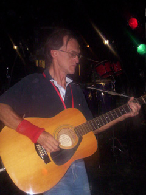

www.cusica.com (en
español, edición de lujo en
cartón, también para descargar, en Bs.) Mercadolibre (en español, edición de lujo
en cartón, en Bs.) Amazon
(en inglés, cajita joyera de
plástico, en US $)
Emilio Mendoza
Guitarra Godin, guitarra española, dirección y producción
Ike
Lizardo
Bajo
eléctrico,
guitarra
de
doce
cuerdas,
guitarra
de seis cuerdas de metal acústica
Pablo
Gil
Saxo tenor
Jesús Eduardo
Milano
Contrabajo
Lerryns
Hernández
Batería
 Ike Lizardo, guitarra 12, bajo eléctrico
3er.
Festival Internacional de Música Urbana,
Tour de los Llanos: San Fernando de Apure (2006)
Foto: Wilmer Mujica
Terruño
Concierto de Protesta "¡Viva la Uuu!" (dúo), Universidad Simón
Bolívar, 2013
Emilio Mendoza, guit. 6, Juan Lizardo, guit. 12
El
origen
de
esta
pieza
fue
un
experimento de composición colectiva, de improvisación y
de composición de estructuras formales. El bajista Ike
hizo una descarga, o improvisación libre, junto con un
amigo baterista, él tocando la guitarra. Grabó la
improvisación en la cual hizo una cantidad de giros
armónicos comunes de la música popular y jazz, una serie
de clichés armónicos. Se transcribió la grabación
separando los giros armónicos en retazos autónomos.
Luego se seleccionó un grupo de estos giros armónicos y
se juntaron, alargándolos o cortándolos para darle forma
a una secuencia de acordes cuyo sentido fue finalmente
el esquema que arriba se describió: una plataforma para
improvisar un tema, una sección que crece y otra que se
inserta y eventualmente cambia la pieza. Por tal razón,
muchas de las secuencias armónicas pueden sonar
conocidas, porque es material de uso común. Se remata al
final con la batería de una manera muy parecida a la
Pieza Nº 3.
La idea de realizar una pieza con materiales muy comunes
surgió del pensamiento musical de lo que es usual,
básico, conocido, hasta banal y cliché. Las progresiones
que se entrelazaron son pedazos de secuencias armónicas
que se encuentran en un gran número de piezas populares,
material conocido y esa fue la idea detrás de expresar
lo que es hogar, la tierra de uno, el territorio, la
casa, el sitio, concepto que tiene que ver con el
sentido de afiliación a un sitio, lugar de identidad,
seguridad y pertenencia, mezclado con nostalgia y
añoranza, grupos, masas, pueblos y ciudades.
{kind=link}